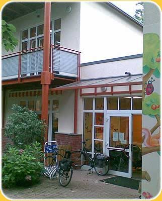
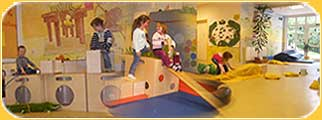
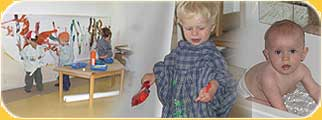
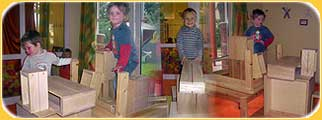
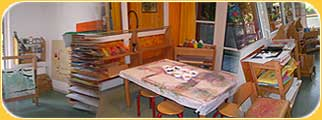
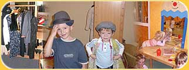
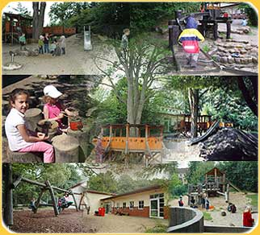

Unser Haus
Das Kindertagesheim Harmsstraße befindet sich direkt am Rande des „Alten Friedhofes“, der seit langer Zeit als Park genutzt wird. Ganz in der Nähe liegt der Harburger Stadtpark „Außenmühle“, den wir mit den Kindern, ohne Straßen überqueren zu müssen, leicht erreichen können.
Die Gestaltung unserer Räume und die Ausstattung hat das Ziel, die Spielmöglichkeiten und Angebote für die Kinder breit zu fächern, so dass einzelnen Räumen jeweils feste Funktionen zugeordnet wurden. So gibt es großzügige, bedürfnisorientierte Spielbereiche wie Bauraum, Rollenspielraum, Matschraum, Atelier, Werkraum, Vorschul- und Sprachförderungsraum. Unterschiedliche Tätigkeiten, die sich ihrer Form nach ausschließen, können somit getrennt bleiben und schaffen damit eine ruhige und entspannte Atmosphäre. Kinder mit großem Bewegungsdrang nutzen unsere große Bewegungshalle oder das Außengelände mit seinen attraktiven und spannenden Angeboten, ohne andere Kinder zu stören, die gerade einer ruhigen Tätigkeit nachgehen.
Die Gestaltung unserer Räume und die Ausstattung hat das Ziel, die Spielmöglichkeiten und Angebote für die Kinder breit zu fächern, so dass einzelnen Räumen jeweils feste Funktionen zugeordnet wurden. So gibt es großzügige, bedürfnisorientierte Spielbereiche wie Bauraum, Rollenspielraum, Matschraum, Atelier, Werkraum, Vorschul- und Sprachförderungsraum. Unterschiedliche Tätigkeiten, die sich ihrer Form nach ausschließen, können somit getrennt bleiben und schaffen damit eine ruhige und entspannte Atmosphäre. Kinder mit großem Bewegungsdrang nutzen unsere große Bewegungshalle oder das Außengelände mit seinen attraktiven und spannenden Angeboten, ohne andere Kinder zu stören, die gerade einer ruhigen Tätigkeit nachgehen.
Unser Kindergartens bietet
- Vier lichtdurchflutete, ca. 40 m² große Gruppenräume mit je einem Vor- und Sanitärraum
- eine große Halle zum Bewegen und Toben
- verschiedene Funktionsräume
- ein großes naturnah gestaltetes Außengelände
|

|
Spiel- und Tobehalle
Die KiTa bietet viele Angebote zur Bewegung, auf die wir auch einen Schwerpunkt setzen. Unsere große Bewegungshalle bietet den Kindern die Möglichkeit, vielfältige Bewegungserfahrungen zu sammeln - mit Hilfe unterschiedlicher Geräte wie Sprossenwand, Matten, Turnbänken, Zauberkästen, Hohlbausteine sowie Bausteinhocker. Diese können flexibel zum Beispiel als Hindernisparkur oder Klettergerüst mit Rutsche aufgebaut werden. Zusätzlich stehen den Kindern in der Halle Fahrzeuge, Rhythmikmaterial (Bälle, Tücher, Seile, Reifen,…), ein Trampolin, Schaukeln und Hängematten sowie Kissen zum Toben und Kuscheln zur Verfügung. |
 |
Trocken- und Naß-Atelier
In unserem Naßraum mit Dusche und Wasserspielrinne können die Kinder das Element Wasser durch Plantschen, Matschen, Wasserfärben,… kennen lernen. Im Trockenbereich können sich Kinder in dem großen Spiegel beobachten und ihre Spiegelbilder zum Beispiel gegenseitig anmalen. An einer großen Wandstaffelei haben die Kinder die Möglichkeit mit Farben zu experimentieren. |
 |
Bauraum
Unser Bauraum enthält verschiedenste Bausteinhocker, Papp- und Plastikröhren, Holzbausteine,… Durch seine vielfältigen Angebote werden die Kinder zum freien Spiel, Rollenspiel, Bauen sowie Konstruieren angeregt und die kindliche Fantasie und das soziale Lernen gefördert. |
 |
Atelier
In unserem Atelier haben die Kinder die Möglichkeit in aller Ruhe und konzentriert zu zeichnen, zu malen, Collagen anzufertigen und zu basteln. Dazu stehen ihnen vielfältige Materialien wie Tusche, Wachsmal- sowie Buntstifte, Woll- und Stoffreste, Klebstoff, Scheren, Ton, Wasser, verschiedene Papiere und Staffeleien zur Verfügung. Natürlich stehen dabei nicht schön gestaltete Bastelprodukte als Resultat der Arbeit der Kinder im Vordergrund, sondern der Prozess des kreativen Tuns. |
 |
Rollenspielraum
Die Dinge des täglichen Bedarfs, mit denen auch wir Erwachsenen umgehen, wecken in der Regel ein großes Interesse und regen zum aktiven Handeln an. Die Kinder nutzen diese Materialien u.a. zu Rollenspielen. Wir stellen den Kindern dafür vielfältige Spielutensilien zur Verfügung. Unser Rollenspielraum ist ausgestattet mit einer Schmink- und Verkleidungsecke und einem Kaufmannladen. Eine Kinderküche mit Essecke sowie eine Puppenwiege und ein großes Kuschelbett vervollständigen das Ensemble. |
 |
Vorschulraum
Den Vorschulkindern steht Platz im ruhigen Vorschulraum zur Verfügung, der ähnlich wie ein Klassenzimmer ausstattet ist. Im Vorschulraum finden jeweils einmal wöchentlich die Vorschul-AG und die Sprachförderung statt.
Werkraum
Unsere KiTa beherbergt auch einen Werkraum. Hier lernen unsere größeren Kinder unter Aufsicht und mit Anleitung den Umgang mit Werkzeugen und basteln mit unterschiedlichen Materialien.
Außengelände
Umgeben ist unsere KiTa von einem 2000 m² großem Außengelände, das im Sommer 2006 komplett neu als naturnaher Freiraum gestaltet wurde. Entstanden ist ein Spielgelände, welches zum kreativen Spielen, Entdecken, Ausprobieren und Gestalten einlädt und wo Kindern positive Naturerfahrungen erleben können.
Mittelpunkt bildet das große Baumhaus inmitten einer Hügellandschaft mit Sandkiste, Kletterbaum, Hangrutsche und Feuerstelle. Außerdem können sich die Kinder auf einem großen Kletterturm mit Hängebrücke, an einer Wasserspielanlage mit Wasserpumpe und auf verschiedenen Schaukeln austoben. Das kleine Weidentipi bietet sich als Rückzugsort an. Für die ganz Kleinen gibt es einen eigenen Bereich im Gelände mit Sandkiste und Spielhaus.
Das Außengeländes wurden weitgehend mit Naturmaterialien wie Steinen, Holzstämmen, Stöcken usw. ausgestattet, die durch Spielgeräte, Alltagsgegenstände und Spielzeug ergänzt sind.
|
 |
|